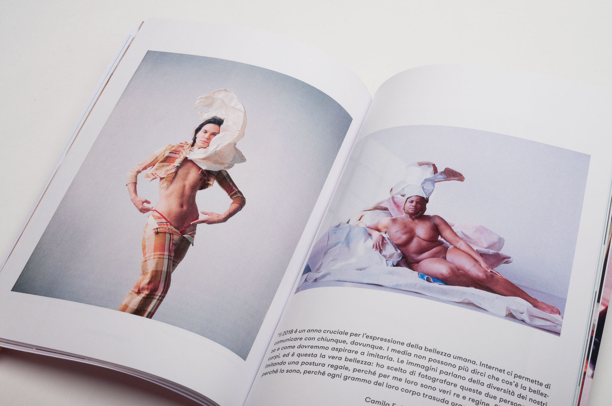
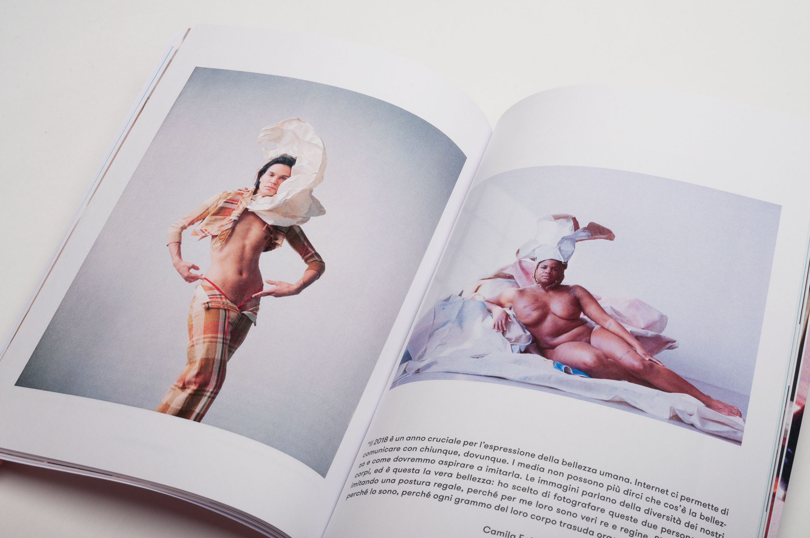
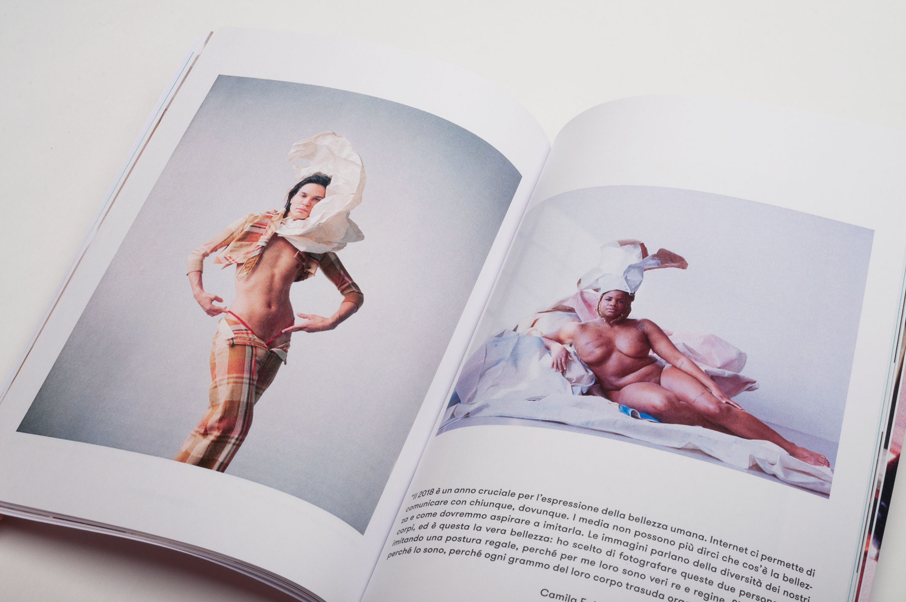

Cover of the brand magazine Phebe
 



Pages from the brand magazine Phebe
Cover of the brand magazine Phebe

Pages from the brand magazine Phebe
Brand Magazine Phebe
The aim of this course was to create a new identity for a brand that wasn't on the market anymore, we decided to work on Goya, an english cosmetics brand, active between the 30s and 80s.
We analysed the brand, paying attention to its history and communication, to define the values and corresponding characteristics at the core of its identity. We based on those the design of a brand magazine, selecting articles and advertisements that could reflect the identity of the brand. We chose to work around the theme of beauty, redefining its meaning by going beyond the aesthetic canon to which its often restricted.
Laboratorio di Metaprogetto
Proff. P. Ciuccarelli, F. Piccolini
A.A. 2018-2019
Project by:
Marta Sironi, Matilde Balestri, Sara Davì, Patricia Vanz Gibellato, Miarana Andriantovoniaina